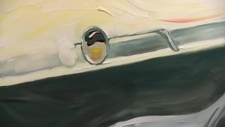

点封面在页面里播放（Vimeo / YouTube / X 需要代理；Vimeo 若没自动开始，再点一下播放键）。觉得好就点「喜欢」，有想法就写在下面的框里保存，我每天出日报前会读，存进偏好和审美库；会多找同类，但每天仍保持类型分散。
目录 01 Seam Transitions（十一段滚动接缝）02 Travel Map Onboarding（Airbnb）03 404 concept（Matrix 走廊）04 Touch lab：点按再交互05 Brandon Yasin 作品集（日落金 / 夜橄榄）06 Lookbook Hover Effects07 Rive Winamp 致敬（三窗全重建）08 This Is What a Godlike Civilization Would Look Like09 Entry Descent and Landing on Mars10 KFC & Doctor Doom（Doom Burger）－ 看完剔除（12 条）拆 细拆：Codrops 十一段接缝转场
01 转场 代码动画 UI动效
Seam Transitions（十一段滚动接缝）
Codrops · X / Demo 近几日 【看过视频】（完整看过）
X 14 秒全片已下载并用看片工具完整看过；今天的细拆
大标题字体未识别（接近 Plus Jakarta Sans / 几何无衬线）
好在哪 约 14 秒 Demo 合集：每页上半实拍英雄图、下半白底，中间接缝随滚动变成撕纸墨边、瓷砖碎裂、毯边流苏、落字雨、等高线、液态波纹、白雾、金缮裂纹、根须、网点沙柱、木屑卷。11 种各约 1 秒硬切，大标题白字无衬线贴左上可借 做章节切换时别只用硬切或淡入：把上一屏底边做成会动的遮罩（撕开、碎裂、落字），下一屏白底从遮罩里顶上来。科普优先学 Contour / Crumble / Typeset。细拆见文末
展开全文
02 UI动效 转场
Travel Map Onboarding（Airbnb）
60fps · X 近几日 【看过画面（抽帧）】
7 秒全片已下载，抽帧看过
界面字用 Airbnb Cereal 一类几何无衬线；未单独识别
好在哪 7 秒手机录屏：白底卡片从下往上滑出，标题「Introducing the new travel map」，下面一颗淡蓝橄榄色的 3D 地球在转；背后露出淡色世界地图。节奏慢、颜色克制，像产品发布片可借 竖屏讲解「新功能」时：先让说明卡片盖住大半屏，主视觉（地球 / 模型）只在卡片里转，背景地图若隐若现，比一上来全屏 3D 更稳
展开全文
03 代码动画 3D质感 UI动效
404 concept（Matrix 走廊）
jhey · X 近几日 【看过画面（抽帧）】
23 秒全片已下载，抽帧看过
字符雨材质 + 透视走廊，偏 WebGL / Three 路线
好在哪 23 秒：浏览器里一整间走廊的墙、地、顶全是往下淌的绿色字符雨，尽头拼出大号「404」，左侧墙面隐约「NOT FOUND」。镜头慢慢往里推，像走进错误页可借 做「出错 / 找不到」这类状态页，可以把报错字嵌进场景材质里，而不是飘在画面上；镜头轻微推进比单纯闪字更有立体感。字体：未识别（等宽终端绿字）
展开全文
04 UI动效 代码动画
Touch lab：点按再交互
Emil Kowalski · X 近几日 【看过画面（抽帧）】
13 秒全片已下载，抽帧看过
页面域名 aiforui.dev
好在哪 13 秒竖屏实验室页：黑底上几块实验（点阵螺旋、点阵字母 Aa、水银形），蓝字标签像终端。重点是交互策略——手机上先点一下锁定这块，再拖、再甩，避免和页面滚动抢手势可借 竖屏里要做复杂拖拽时，学他「先点选、再操作」：滚动和手势分开，观众才不会误滑走。字体：未识别（等宽 + 蓝标签）
展开全文
05 字体版式 转场 UI动效
Brandon Yasin 作品集（日落金 / 夜橄榄）
Brandon Yasin × Codrops · Codrops 2026-11-04 【看过画面（抽帧）】
19 秒全片已下载，抽帧看过
文章写明 transitions 由 GSAP 驱动
好在哪 19 秒站点巡礼：奶油色与橄榄绿两套色温切换，大标题、案例网格、价值观双栏跟着 GSAP 过渡。有一幕像「TIME TRAVEL」拨盘控件，整体偏编辑设计感，不花哨可借 个人站或系列封面可以用「昼 / 夜」两套有限色，滚动时只换底色和字重，转场交给 GSAP 时间线，比每页换皮肤更统一。字体：未识别
展开全文
06 UI动效 转场 代码动画
Lookbook Hover Effects
Codrops · X 近几日 【看过画面（抽帧）】
10 秒全片已下载，抽帧看过
八种 hover，片里轮播了其中几种
好在哪 10 秒时尚网格：六宫格写真，悬停时卡片用融化、揭皮、液态玻璃、频道闪烁等方式盖住照片，露出 Look 编号和面料说明。颜色是灰绿薄纱那一类，很克制可借 做「系列卡片」悬停或点开时，遮罩本身可以是一种材质转场（融、揭、闪），不只是透明度。字体：未识别（小无衬线 + 大号衬线数字）
展开全文
07 代码动画 UI动效
Rive Winamp 致敬（三窗全重建）
Rive / @PedroAlpera · X 近几日 【看过画面（抽帧）】
52 秒全片已下载，抽帧看过；片中有口播出镜
社区还做了吉他和弦工具和 VST 皮肤一类延伸
好在哪 52 秒：上半是用 Rive 搭出来的经典 Winamp 三窗（播放器、均衡器、播放列表），连绿色频谱和皮肤按钮都在；下半作者口述。重点看控件态和窗口拖拽的复刻精度可借 复刻老软件 UI 时，先把三个窗口的状态机（播放 / 暂停 / 均衡器滑杆）拆开做，再拼布局，比一张静态皮贴上去耐看。字体：未识别（Winamp 像素 UI 字）
展开全文
08 知识讲解 MG
This Is What a Godlike Civilization Would Look Like
Kurzgesagt · YouTube · 超过 3 分钟，只看前 2 分钟 【看过画面（抽帧）】
YouTube
原片超过 3 分钟，按规则只下载并抽帧看了前 2 分钟
云边框是系列固定语言
好在哪 下载了前 120 秒：从等距营地（帐篷、篝火、砍树）慢慢拉开文明尺度，配色是 Kurzgesagt 惯用的青绿、桃粉云边。信息密度高，但每一镜颜色块清楚可借 讲「尺度变大」：先给一个小场景让人站稳，再整层推远或抬高，比一上来宇宙全景更好懂。字体：未识别（Kurzgesagt 定制无衬线）
展开全文
09 知识讲解 3D质感
Entry Descent and Landing on Mars
Jared Owen · YouTube Shorts 近作 【看过画面（抽帧）】
约 61 秒全片已下载，抽帧看过
好在哪 约 61 秒竖屏：白壳着陆器对着火星弧面下降，右上角 Jared Owen 水印，底部大字幕跟旁白。模型干净、几乎没炫光，像拆开说明书在转可借 竖屏讲结构时：主体居中、字幕贴底、品牌角标固定，镜头只绕关键零件转，少切多转，观众更容易跟上。字体：未识别（粗无衬线字幕）
展开全文
10 剪辑节奏 实拍剪辑 MG
KFC & Doctor Doom（Doom Burger）
Tom Noakes & Black Kite / KFC UKI · YouTube / Stash 近作 【看过画面（抽帧）】
约 60 秒已下载，抽帧看过
宽银幕构图，偏广告预告片节奏
好在哪 下载约 60 秒：超低机位、歪斜构图、着火的热狗招牌、酱汁飞溅，剪辑跟着动作硬切，像把快餐片剪成超级英雄预告。实拍为主，中间夹少量图形可借 要「闹」的节奏时：机位故意不正、切点卡在撞击 / 起火瞬间，比加特效字更狠。科普里偶尔用一两次这种狠切做段落重音就够，别整片都歪
展开全文
看完剔除（12 条） Johnny Harris · 长访谈口播为主，前两分钟几乎是书房讲话

Em Cooper / The Beatles · 油画笔触美，但更像美术短片，和代码/讲解视频可迁移手法少
Motion Plus Design · 昨天已剔除：黑底报幕讲者名，信息少
Oz Type · 候选阶段画面偏静态展示，今天已有 Brandon / Lookbook 顶版式
X 候选 · 精修 3D 卡通角色，落在「已知不要」里
今日细拆 · 第 1 条
14 秒，把「两段之间的那条边」做成会动的遮罩 【看过视频】（完整看过），时间点是大约值 Codrops 的 Seam Transitions Demo 合集。每一页都是「上半实拍英雄图 + 下半白底文案」，滚动时白底从下往上推，中间接缝变成撕纸、墨渍、等高线、金缮裂纹等形状。做 Remotion / 代码讲解的章节切换，这条几乎可以直接拆成遮罩组件
画面长什么样 固定版式：上半实拍英雄图，下半白底文案；大标题白字无衬线全大写贴左上（CANOPY、VIDRADO、MANTA…） 接缝永远在英雄图下沿——白页往上推时，边界才变成撕纸、碎块、流苏、落字等形状 每种接缝服务题材：森林用墨边、瓷砖用碎裂、毯子用流苏、图书馆用落字、梯田用等高线、金缮用裂纹 字体：Demo 侧是 Plus Jakarta Sans 一类；片中大标题未单独识别 逐段看（完整看片记下的大约秒数） 0–1 秒：Ink / Canopy——雾林下沿像湿墨渗开的毛边，白底从墨渍里顶上来 1–2 秒：Crumble / Vidrado——瓷砖立面下沿碎成方块粒子往下掉（像素碎裂） 2–3 秒：Fray / Manta——毯边垂下一排流苏，左右轻晃，白底上推 3–5 秒：Typeset / Stacks——书架下沿化成密密麻麻的字母，像铅字雨往白底里落 5–6 秒：Contour / Socalco——梯田航拍下沿长出一圈圈等高线，线自己往上画 6–7.5 秒：Marble / Ebru——大理石纹被液态波纹扭曲，像水上拓印溶进白底 7.5–9 秒：Mist / Bruma——白雾从接缝往上涌，把山坡软溶解掉 9–10 秒：Craquelure / Mend 金——金色裂纹蜘蛛网一样往陶瓷里裂开（金缮） 10–11 秒：Roots / Soak——黑色根须从土里往白底里生长分叉 11–12 秒：Sediment / Baldio——下沿化成竖向网点／沙粒柱往下淌 12–14 秒：Shavings / Grain——木纹边缘卷成木屑螺旋，一片片掉进白底 最值得学的是「接缝」这个借口 转场不是两张图淡入淡出，而是共享一条会变形的边界 合集每种只给 1–1.5 秒、硬切下一条，是目录节奏；真做章节切换应把一种接缝做到 1–2 秒并停住 白底文案区始终简单，复杂全交给接缝，信息才读得清 科普里优先可迁移的三种：Contour（数据／地理感）、Crumble（结构拆解）、Typeset（从画面回到文字） Remotion / 代码里怎么做（做法建议，不是原片工具清单） 用一张全屏 Mask：上方上一镜、下方下一镜；边缘用 SVG path 或 canvas 噪声画 alpha 撕纸／墨边：锯齿 path + 一点 Perlin 扰动，进度 0→1 时 path 上移 碎裂／落字／木屑：在接缝带上生成粒子（方块、字符、螺旋），给一点重力 等高线／裂纹／根须：用 stroke 动画把折线网络画出来，再当 clip 或叠加层 液态／雾：WebGL 位移贴图或阈值噪波；科普里慎用，容易抢内容 时间：接缝 20–40 帧（30fps 约 0.7–1.3 秒），前后各留 10–20 帧静止，别和下一段口播抢 放到 AI 科普里怎么用 横屏口播切示意图、竖屏从标题卡进 B-roll：选一种和题材有关的接缝（讲网络用裂纹，讲地理用等高线，讲生成用墨渍），一集只用一次当章节重音。别 11 种轮着炫，观众会只记住特效忘了内容
看原帖 ↗ 在线 Demo ↗ GitHub ↗
信源：X（60fps / jhey / Emil Kowalski / Codrops / Rive）、YouTube（Kurzgesagt / Jared Owen / KFC）、Stash、Codrops Demo。全程只读浏览，没有点赞、关注、评论或转发。
 X
X